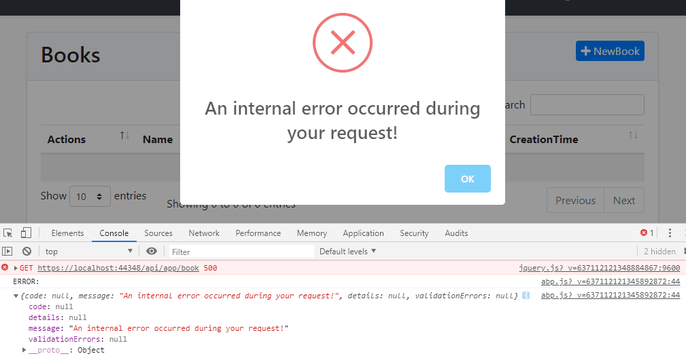
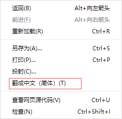
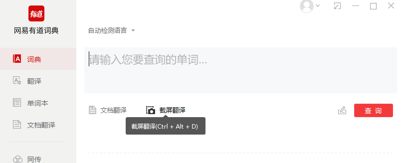

相信大家混迹在各种技术交流群会经常看到各种奇奇怪怪的提问。
场景一
萌新一进群，甩出一堆代码片段截图。
问：请问有大佬能帮我解决一下问题吗？
我：......
场景二
萌新写完一段代码，编译报错，贴出一段代码(下面代码只是举例子)
问：我这段代码报错找不到原因，有大佬帮我看看是哪里错了吗？
我: ......
int sum = 0;
for(int i = 0; i < 10; i++)
{
sum+=i
}
reutrn sum;场景三
萌新贴出一张浏览器截图,
问：大佬们我这报了个500错误，请问是什么原因导致500？

我: ......
场景四
调试程序出现异常
萌新看到一堆异常堆栈，看都不看，反手就截个图发到群里。（截图中的异常堆栈信息已经很清楚可以看出是什么错误以及异常位置）（一时半会没找到例子截图，将就口述哈哈哈，自己脑补吧~）
问：请问有大佬帮帮看看这个异常怎么解决吗？
我：......
场景N
......
上述场景只是举例几个最常见的，还有各种各样的奇奇葩葩就不一一说了，永远举不完哈哈哈哈哈
很多时候开发都会用到一些开源的工具或者一些收费的工具。
一遇到问题就问别人这个工具错误怎么解决，拜托，不是所有人都用过同一个工具，问了也不一定能解决你的问题。
其实很多工具都是有配套的文档的，而且都挺齐全。
当遇到一些工具相关的问题的时候，首先更应该查阅文档，一般的文档都会把一些常见的问题和错误解决方法都整理好了。
英文文档看不懂？
这不我们强大的浏览器都自带翻译功能了吗？

翻译不准确？
这不还有各种翻译软件吗？

只要英语不太差，翻译加上一些自己专业词汇上的理解，基本都可以满足看懂的需求了吧~
基本每一门语言都有专门的IDE帮助开发，这些IDE都已经挺智能了（vim请忽略）
比如java的JB系列，.net平台下的VS。
举个VS的栗子吧（个人比较常用哈哈哈哈哈）毕竟宇宙第一IDE哈哈哈哈
等等等等，各种IDE都有很多工具帮助我们开发程序，要善于利用这些工具帮助自己定位问题，甚至解决问题。
度娘，必应，谷歌（没梯子用就算了）这些搜索引擎那么牛逼，输一个问题给你N个结果，为什么不好好利用咧。
大家只要梳理好自己的问题的关键词，在搜索引擎基本都能找到自己需要的东西。
上面的几个场景可能很多人都遇到过，或者问问题的就是你自己哈哈哈。
当然每个人都是从初学者过来的，都会有犯各种低级错误的时候。
但是，错误犯过一次就不应该再犯，坑踩过一次就不要再掉坑里。
很多人在遇到问题的时候，特别是萌新，脑子转都不会转，直接问人。就和上学时题目不会做，直接和学霸同学要答案抄那样。
渐渐就会越来越形成一个依赖的习惯，一遇到问题，不是自己先思考，而是先问人，别人帮忙解决后，自己也不思考解决方法就过去了，还当作是自己解决了问题。
其实很多问题，大部分人只要可以细心一点，就能避免犯错，遇到错误了，耐心一点，检查自己写的东西，也可以发现问题，当然能不能自己解决另说，起码可以发现问题。
就写那么多先吧~~ 如果大佬们还有更好的一些定位问题解决问题的技巧，欢迎评论分享分享~~